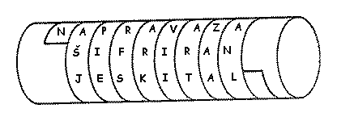
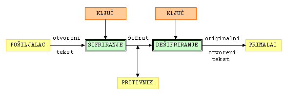

 Neki elementi kriptografije bili su prisutni veæ kod starih Grka. Naime, Spartanci su u 5. stoljeæu prije Krista upotrebljavali napravu za šifriranje zvanu skital. To je bio drveni štap oko kojeg se namotavala vrpca od pergamenta, pa se na nju okomito pisala poruka. Nakon upisivanja poruke, vrpca bi se odmotala, a na njoj bi ostali izmiješani znakovi koje je mogao proèitati samo onaj tko je imao štap jednake debljine.
Osnovni zadatak kriptografije je omoguæiti dvjema osobama (zvat æemo ih pošiljalac i primalac - u kriptografskoj literaturi su za njih rezervirana imena Alice i Bob) komuniciranje preko nesigurnog komunikacijskog kanala (telefonska linija, raèunalna mreža, ...) na naèin da treæa osoba (njihov protivnik - u literaturi se najèešæe zove Eva ili Oskar), koja može nadzirati komunikacijski kanal, ne može razumjeti njihove poruke. Poruku koju pošiljalac želi poslati primaocu zvat æemo otvoreni tekst (engl. plaintext). To može biti tekst na njihovom materinjem jeziku, numerièki podatci ili bilo što drugo. Pošiljalac transformira otvoreni tekst koristeæi unaprijed dogovoreni kljuè. Taj postupak se naziva šifriranje, a dobiveni rezultat šifrat (engl. ciphertext) ili kriptogram. Nakon toga pošiljalac pošalje šifrat preko nekog komunikacijskog kanala. Protivnik prisluškujuæi može doznati sadržaj šifrata, ali ne može odrediti otvoreni tekst. Za razliku od njega, primalac koji zna kljuè kojim je šifrirana poruka može dešifrirati šifrat i odrediti otvoreni tekst.

Za razliku od dešifriranja, kriptoanaliza ili dekriptiranje je znanstvena disciplina koja se bavi prouèavanjem postupaka za èitanje skrivenih poruka bez poznavanja kljuèa. Kriptologija je pak grana znanosti koja obuhvaæa kriptografiju i kriptoanalizu.Kriptografski algoritam ili šifra je matematièka funkcija koja se koristi za šifriranje i dešifriranje. Opæenito, radi se o dvije funkcije, jednoj za šifriranje, a drugoj za dešifriranje. Te funkcije preslikavaju osnovne elemente otvorenog teksta (najèešæe su to slova, bitovi, grupe slova ili bitova) u osnovne elemente šifrata, i obratno. Funkcije se biraju iz odreðene familije funkcija u ovisnosti o kljuèu. Skup svih moguæih vrijednosti kljuèeva nazivamo prostor kljuèeva. Kriptosustav se sastoji od kriptografskog algoritma, te svih moguæih otvorenih tekstova, šifrata i kljuèeva. Dakle, imamo sljedeæu formalnu definiciju.
|
Definicija 1.1: Kriptosustav je ureðena petorka
(P,
C,
K,
E,
D) za koju
vrijedi: 1) P je konaèan skup svih moguæih osnovnih elementa otvorenog teksta; 2) C je konaèan skup svih moguæih osnovnih elemenata šifrata; 3) K je prostor kljuèeva, tj. konaèan skup svih moguæih kljuèeva; 4) Za svaki |
Najvažnije svojstvo u definiciji je
eK(x1) = eK(x2) = y,
za dva razlièita otvorena teksta x1 i x2, onda primalac ne bi mogao odrediti treba li y dešifrirati u x1 ili x2, tj. dK(y) ne bi bilo definirano. U skladu s tim imamo da ako jeKriptosustave obièno klasificiramo s obzirom na sljedeæa tri kriterija:
1. Tip operacija koje se koriste pri šifriranju
Imamo podjelu na supstitucijske šifre u kojima se svaki element otvorenog teksta (bit, slovo, grupa bitova ili slova) zamjenjuje s nekim drugim elementom, te transpozicijske šifre u kojima se elementi otvorenog teksta permutiraju (premještaju). Npr. ako rijeè TAJNA šifriramo u XIWOI, naèinili smo supstituciju, a ako je šifriramo u JANAT, naèinili smo transpoziciju. Postoje takoðer i kriptosustavi koji kombiniraju ove dvije metode.
2. Naèin na koji se obraðuje otvoreni tekst
Ovdje razlikujemo blokovne šifre, kod kojih se obraðuje jedan po jedan blok elemenata otvorenog teksta koristeæi jedan te isti kljuè K, te protoène šifre (engl. stream cipher) kod koji se elementi otvorenog teksta obraðuju jedan po jedan koristeæi pritom niz kljuèeva (engl. keystream) koji se paralelno generira.
3. Tajnost i javnost kljuèeva
Ovdje je osnovna podjela na simetriène kriptosustave
i kriptosustave s javnim kljuèem. Kod simetriènih
ili konvencionalnih kriptosustava, kljuè za dešifriranje
se može izraèunati poznavajuæi kljuè za šifriranje i
obratno. Ustvari, najèešæe su ovi kljuèevi
identièni. Sigurnost ovih kriptosustava leži u tajnosti
kljuèa. Zato se oni zovu i kriptosustavi s tajnim
kljuèem.
Kod kriptosustava s javnim kljuèem ili asimetriènih kriptosustava,
kljuè za dešifriranje se ne može
(barem ne u nekom razumnom vremenu) izraèunati iz kljuèa
za šifriranje. Ovdje je kljuè za šifriranje javni kljuè.
Naime, bilo tko može šifrirati poruku
pomoæu njega, ali samo osoba koja ima odgovaraju kljuè za
dešifriranje (privatni ili tajni kljuè)
može dešifrirati tu poruku. Ideju javnog kljuèa prvi su javno iznijeli
Whitfield Diffie i
Martin Hellman 1976. godine, kada su dali prijedlog
rješenja problema razmjenjivanja kljuèeva za simetriène kriptosustave putem nesigurnih
komunikacijskih kanala.
Sada æemo dati nekoliko opæih napomena o kriptoanalizi. Osnovna pretpostavka kriptoanalize je da kriptoanalitièar zna koji se kriptosustav koristi. To se zove Kerckhoffsovo naèelo, po Nizozemcu Augustu Kerckhoffsu (1835-1903), autoru važne knjige "La Cryptographie militaire" (Vojna kriptografija). Naravno, ova pretpostavka u konkretnom sluèaju ne mora biti toèna, ali mi ne želimo da nam sigurnost kriptosustava leži na "klimavoj" pretpostavci da naš protivnik ne zna koji kriptosustav koristimo. Èak ukoliko kriptoanalitièar treba provjeriti nekoliko moguæih kriptosustava, time se kompleksnost procedure bitno ne mijenja. Dakle, mi pretpostavljamo da tajnost šifre u potpunosti leži u kljuèu.
Razlikujemo èetiri osnovna nivoa kriptoanalitièkih napada.
1. Samo šifrat
Kriptoanalitièar posjeduje samo šifrat od nekoliko poruka šifriranih pomoæu istog algoritma. Njegov je zadatak otkriti otvoreni tekst od što više poruka ili u najboljem sluèaju otkriti kljuè kojim su poruke šifrirane.
2. Poznat otvoreni tekst
Kriptoanalitièar posjeduje šifrat neke poruke, ali i njemu odgovarajuæi otvoreni tekst. Njegov zadatak je otkriti kljuè ili neki algoritam za dešifriranje poruka šifriranih s tim kljuèem.
3. Odabrani otvoreni tekst
Kriptoanalitièar ima moguænost odabira teksta koji æe biti šifriran, te može dobiti njegov šifrat. Ovaj napad je jaèi od prethodnoga, ali je manje realistièan.
4. Odabrani šifrat
Kriptoanalitièar je dobio pristup alatu za dešifriranje, pa može odabrati šifrat, te dobiti odgovarajuæi otvoreni tekst. Ovaj napad je tipièan kod kriptosustava s javnim kljuèem. Tu je zadatak kriptoanalitièara otkriti kljuè za dešifriranje (tajni kljuè).
(5.) Potkupljivanje, ucjena, kraða i slièno
Ovaj napad ne spada doslovno u kriptoanalizu, ali je vrlo efikasan i èesto primjenjivan u kombinaciji s "pravim" kriptoanalitièkim napadima.
Naravno, možemo se pitati koliko je realno da æe kriptoanalitièar biti u prilici primijeniti 2., 3. ili 4. vrstu napada. Na prvi pogled to izgleda dosta nerealno. Meðutim, tu treba imati u vidu èinjenicu da je kriptoanalitièar veæ nekako došao u posjed šifrata koji nije bio njemu namjenjen. Dakle, svakako on posjeduje izvjesne sposobnosti koje mu mogu pomoæi i oko drugih vrsta kriptoanalitièkih napada.
| Web stranica kolegija Kriptografija | Andrej Dujella - osobna stranica |